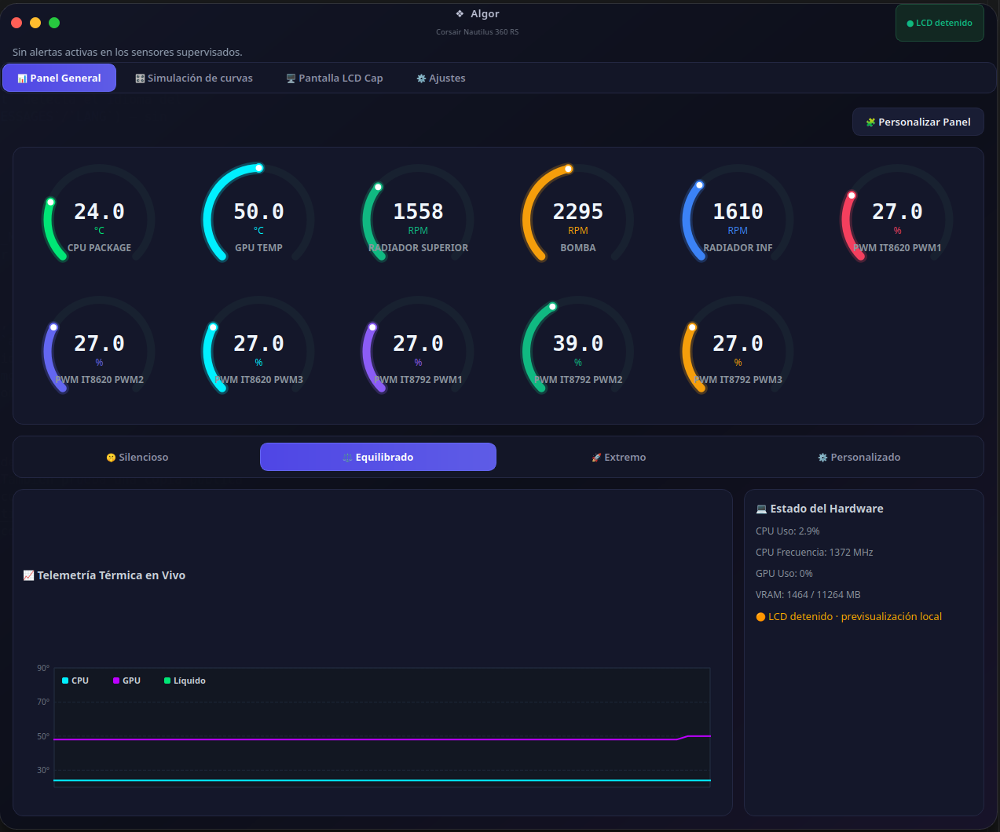
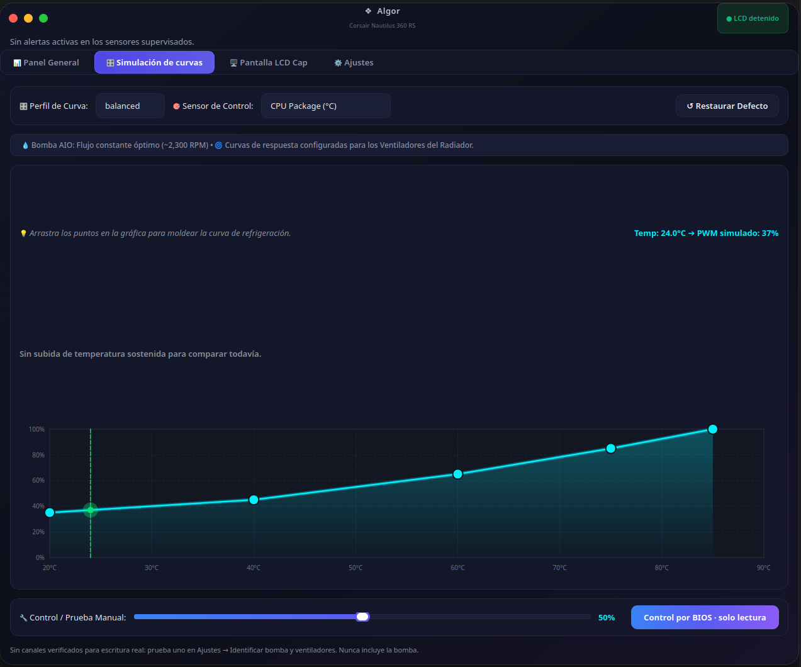
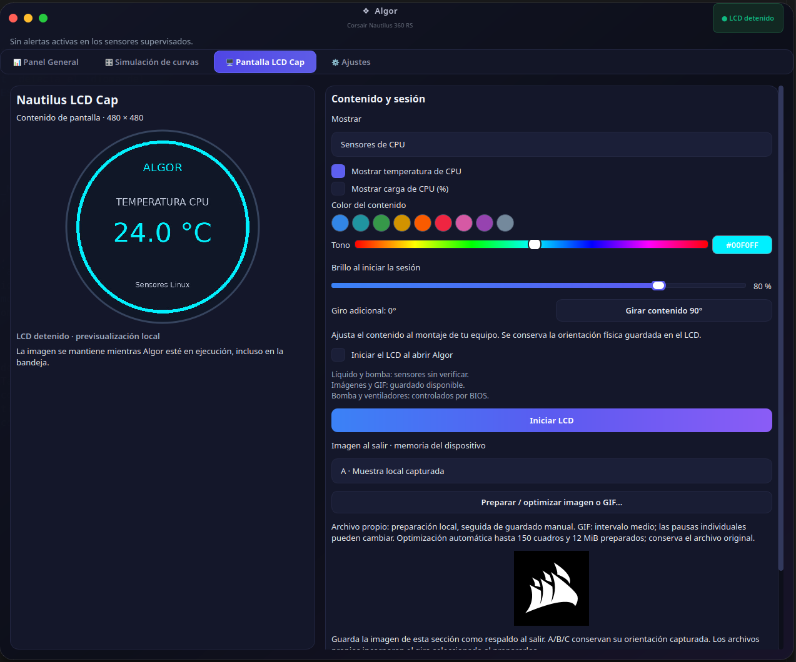
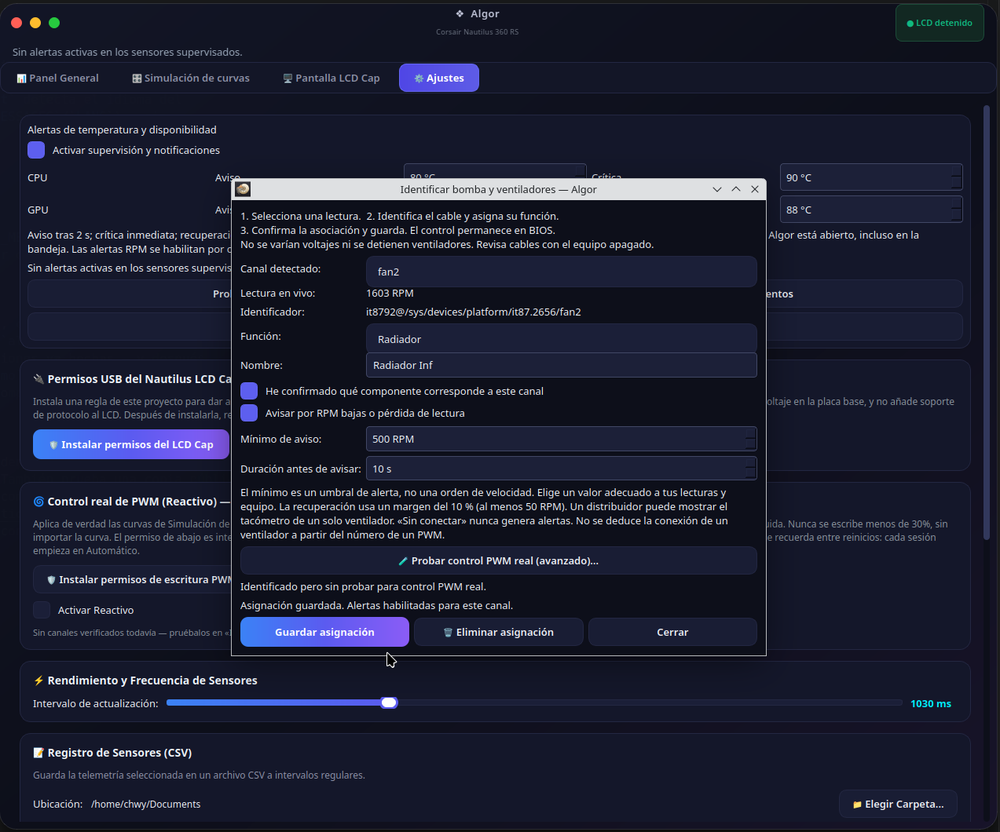
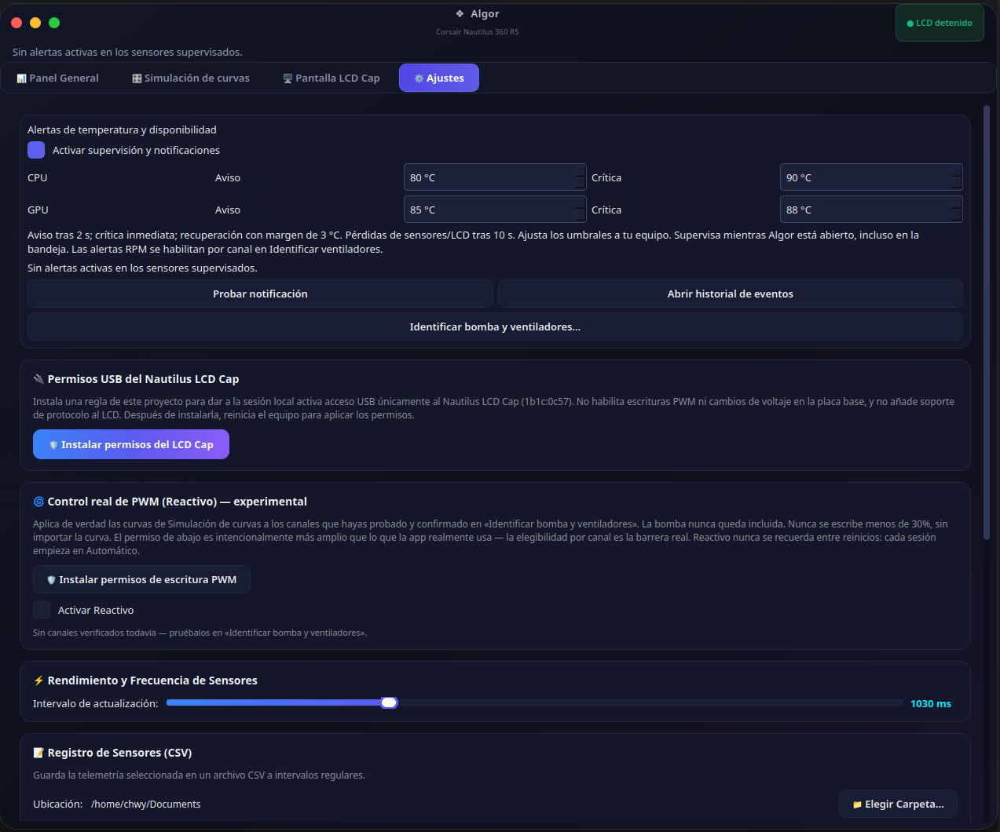
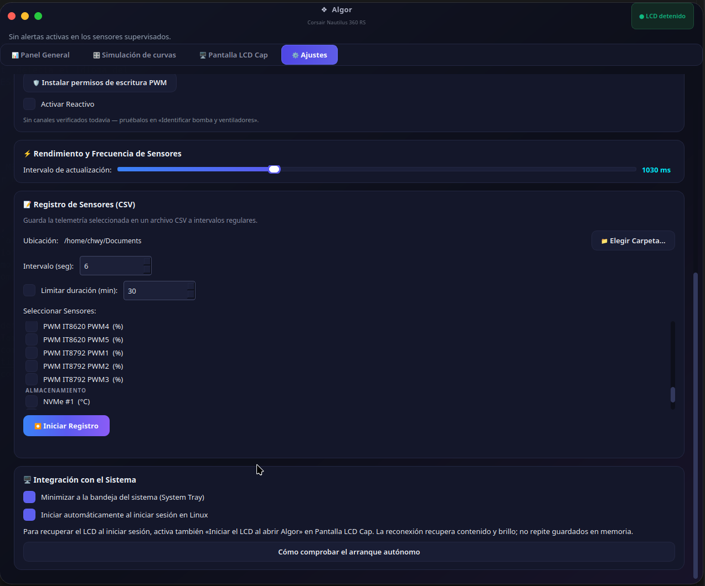
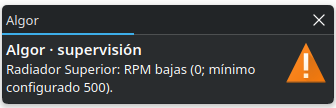
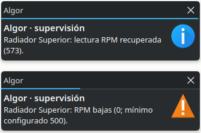
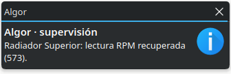

Monitoreo de sensores, telemetría en vivo y personalización total del Corsair Nautilus LCD Cap — nativo para Linux. Proyecto independiente, sin afiliación con Corsair.
Sensor monitoring, live telemetry and full customization of the Corsair Nautilus LCD Cap — native on Linux. Independent project, not affiliated with Corsair.

Sensores nativos de Linux, LCD personalizable y curvas simuladas — con la bomba siempre bajo control de la BIOS.
Native Linux sensors, a customizable LCD and simulated fan curves — with the pump always under BIOS control.
Perfiles Silencioso / Equilibrado / Extremo y un editor de curvas propio, con arrastrar y soltar. Solo escribe PWM real si activás el modo opt-in Reactivo sobre un canal confirmado por vos.
Silent / Balanced / Extreme presets and a drag-and-drop custom curve editor. Only writes real PWM if you explicitly enable the opt-in Reactive mode on a channel you've confirmed.

Temperatura/carga, imágenes, GIF, color, brillo y rotación — guardado en la memoria propia del LCD.
Temperature/load, images, GIF, color, brightness and rotation — saved to the LCD's onboard memory.

Identifica bomba y ventiladores canal por canal antes de habilitar alertas RPM.
Identifies pump and fans channel by channel before enabling RPM alerts.

Notificaciones nativas de temperatura, RPM bajas/recuperación y errores LCD, con historial y umbrales por canal.
Native notifications for temperature, low RPM/recovery and LCD errors, with history and per-channel thresholds.

Medidores reordenables arrastrando con el mouse, exportación CSV e historial de eventos persistente.
Gauges reorderable by drag-and-drop, CSV export and a persistent event history.

Bomba y ventiladores permanecen controlados por BIOS por defecto. Las curvas de la app son una simulación: no escriben PWM salvo que actives explícitamente el modo opt-in Reactivo sobre un canal probado y confirmado por vos — la bomba nunca es candidata, en ningún modo. No cambia voltajes. No existe modo Cero RPM. Ver docs/PWM_REAL_CONTROL.md.
Pump and fans remain under BIOS control by default. The app's fan curves are a simulation: they do not write PWM unless you explicitly enable the opt-in Reactive mode on a channel you have tested and confirmed yourself — the pump is never a candidate, in any mode. No voltage changes. No Zero RPM mode. See docs/PWM_REAL_CONTROL.md.
Notificaciones nativas del sistema cuando un canal cae por debajo del umbral configurado, y cuando se recupera.
Native system notifications when a channel drops below its configured threshold, and when it recovers.



1b1c:0c57 — Corsair Nautilus LCD CapLa prueba de retirada total de alimentación USB y la validación física completa del asistente RPM siguen pendientes. Otros modelos de LCD no están admitidos por el transporte actual.
Consultá la matriz y guía de pruebas para reportar tu propio equipo.
Full USB power-removal testing and complete physical validation of the RPM wizard are still pending. Other LCD models are not supported by the current transport layer.
See the compatibility matrix and testing guide to report your own hardware.
Linux de escritorio, Python 3.10–3.13, entorno virtual, libusb y bibliotecas Qt.
Linux desktop, Python 3.10–3.13, virtual environment, libusb and Qt libraries.
O descargá el ZIP desde Code → Download ZIP.
Or download the ZIP from Code → Download ZIP.
Instalá dependencias con pip en un venv aislado.
Install dependencies with pip inside an isolated venv.
Instalá la regla udev para acceso USB y corré main.py.
Install the udev rule for USB access and run main.py.
sudo apt update
sudo apt install python3-venv libusb-1.0-0 libegl1 libopengl0 libxcb-cursor0
python3 -m venv .venv
.venv/bin/python -m pip install -r requirements.txt
.venv/bin/python main.pyGuía completa, acceso USB al LCD y desinstalación en el README del repositorio. Full guide, USB access for the LCD and uninstalling in the repository README.